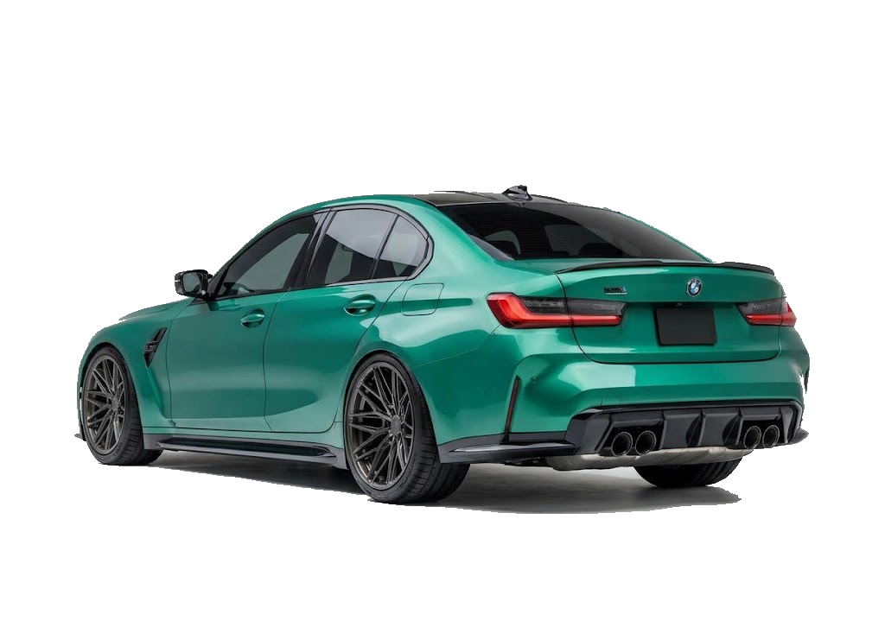

deprecated
- Marquee هو عنصر HTML قديم بيستخدم لتحريك النصوص والصور في اتجاهات مختلفة ومحددة.
- يعتبر Deprecated، يعني تم إهماله ومش مستحسن استخدامه في المواقع الحديثة.
- من خصائصه direction لتحديد الاتجاه وbehavior لتحديد طريقة الحركة.
create movement

flexibilite
- Animation هي خاصية في CSS بتستخدم لعمل حركة للعناصر على صفحة الويب.
- بنستخدم @keyframes لتحديد شكل الحركة من البداية للنهاية.
- بتتميز إنها بتدينا تحكم أكبر في سرعة الحركة واتجاهها وعدد مرات تكرارها.